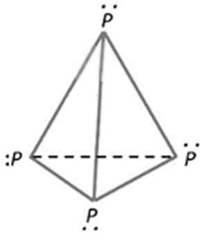

해설 6
6-(1)
기체 상의 인을 이상 기체로 가정하면
\[PV = nRT = \frac{w}{M_w}RT\]
이므로
\[M_w = \frac{wRT}{PV} = d\frac{RT}{P} = \frac{1}{3}\ \text{kg/m}^3 \times \frac{0.08\ \text{atm·L/mol·K} \times 465\ \text{K}}{0.1\ \text{atm}} = 124\ \text{g/mol}\]
이다. 이때 인의 원자량이 31 g/mol이므로 기체를 구성하고 있는 인 화합물의 분자식은 \(\text{P}_4\)이다.
또한 인의 원자가전자가 5개이고 이것을 루이스 구조로 나타낼 때 비공유 전자쌍 1개, 홀전자(결합전자) 3개가 된다. 이를 전자쌍 반발 이론에 적용하면 인 원자가 서로 가장 멀리 떨어진 아래와 같은 정사면체 형태의 구조임을 예측할 수 있다.

위 분자 구조를 살펴보면 다중 결합은 없으며 단일 결합 6개가 존재함을 알 수 있다.
(a) 분자식: \(\text{P}_4\) (b) 삼차원 구조: 정사면체 (c) 단일결합 6개, 이중결합 0개, 삼중결합 0개
6-(2)
\(\text{P}_4\)가 분해 반응을 통해 동일한 두 개의 기체 분자를 생성하므로 \(\text{P}_4\)는 아래와 같이 반응한다.
\[\text{P}_4\text{(g)} \rightarrow 2\text{P}_2\text{(g)}\]
따라서 생성된 기체의 분자식은 \(\text{P}_2\)이다. 이때 전자쌍 반발 원리를 적용하면 해당 분자는 두 개의 원자로 이루어졌으므로 선형 구조를 갖는다. 또한 인이 질소족(15족)임을 감안하면 \(\text{P}_2\)의 루이스 구조식은 \(\text{N}_2\)와 마찬가지로 삼중결합을 가진 다음의 구조를 갖는다.
\[:\text{P} \equiv \text{P}:\]
(a) 분자식: \(\text{P}_2\) (b) 삼차원 구조: 선형 (c) 단일결합 0개, 이중결합 0개, 삼중결합 1개